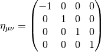
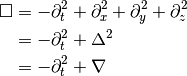

Special Relativity¶
Conventions¶
Metric in special relativity

Quantities and Operations¶
d’Alembertian¶
d’Alembert operator, or wave operator, is the Lapace operator in Minkowski space. [1]

In the usual {t,x,y,z} natural orthonormal basis,

- On wiki [2] , they give some applications to it.
- klein-Gordon equation

- wave equation for electromagnetic field in vacuum:
For the electromagnetic four-potential
 footnote{Gauge}
footnote{Gauge} - wave equation for small vibrations

- klein-Gordon equation